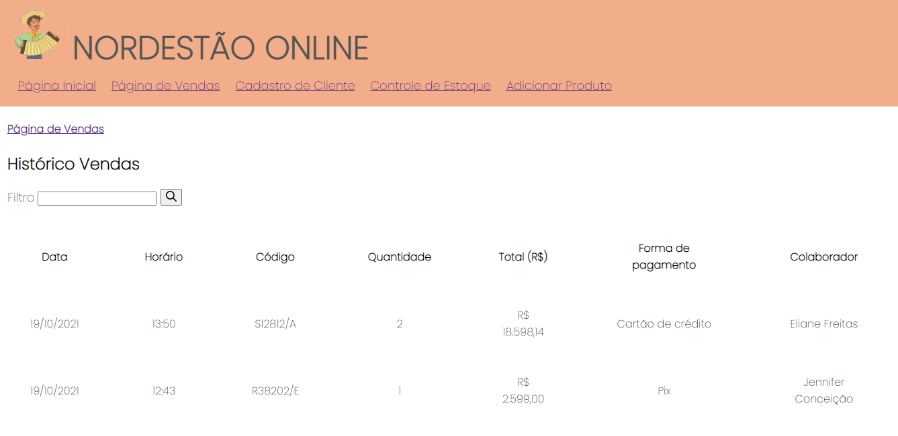

Loja Nordestão


O loja Nordestão é uma ideia de sistema de loja em que o colaborador pode acessar quem trabalha na unidade, o estoque da loja, adicionar produtos, cadastrar clientes, registrar compras e visualizar o histórico de vendas da loja.
As tecnologias usadas foram
- HTML
- CSS
Você pode saber mais sobre o Nordestão aqui